Pengomposan Praktis
Dari Rumah
Proses mendaur ulang bahan organik, seperti daun dan sampah sisa makanan menjadi pupuk yang berguna bagi tanah dan tanaman
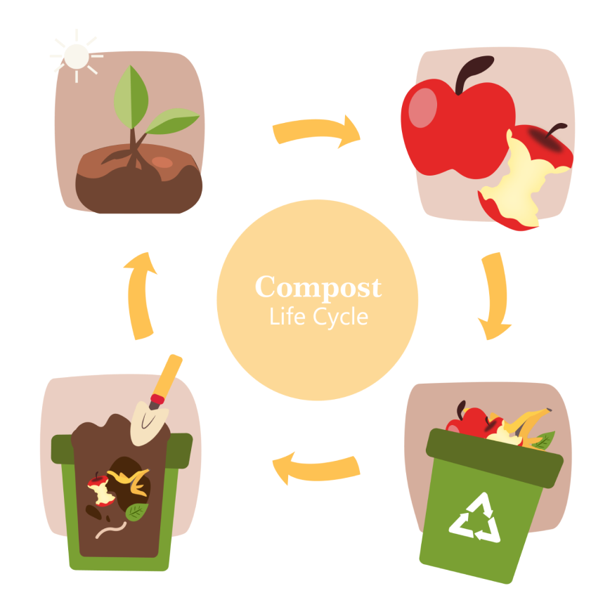
Manfaat


Yang Bisa Dikomposkan
01.

Unsur utama dalam pengomposan adalah Nitrogen(N) dan Karbon(C), Nitrogen diperoleh dari unsur hijau sedangkan Carbon diperoleh dari sampah coklat
Unsur Hijau (N)
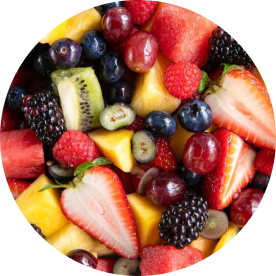
Buah
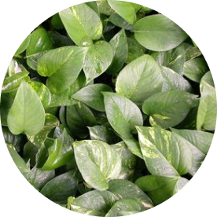
Daun Hijau

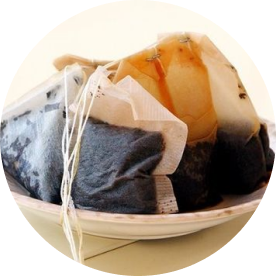
Ampas Teh / Kopi
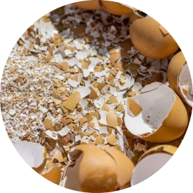
Cangkang Telur
Unsur Coklat (C)
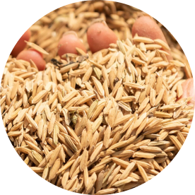
Gabah / Sekam
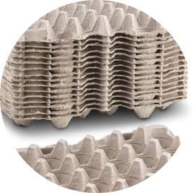
Tray Telur
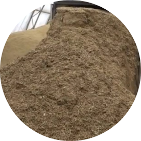
Serbuk Gergaji
Alat dan Bahan
02.

Sampah organik
(unsur hijau dan coklat)
(unsur hijau dan coklat)
Bioaktivator (tidak wajib)
MOL, EM4, air cucian beras, dll
MOL, EM4, air cucian beras, dll
Tanah
Udara/oksigen

Ember
Karung
Sekop
Tahapan Mengompos
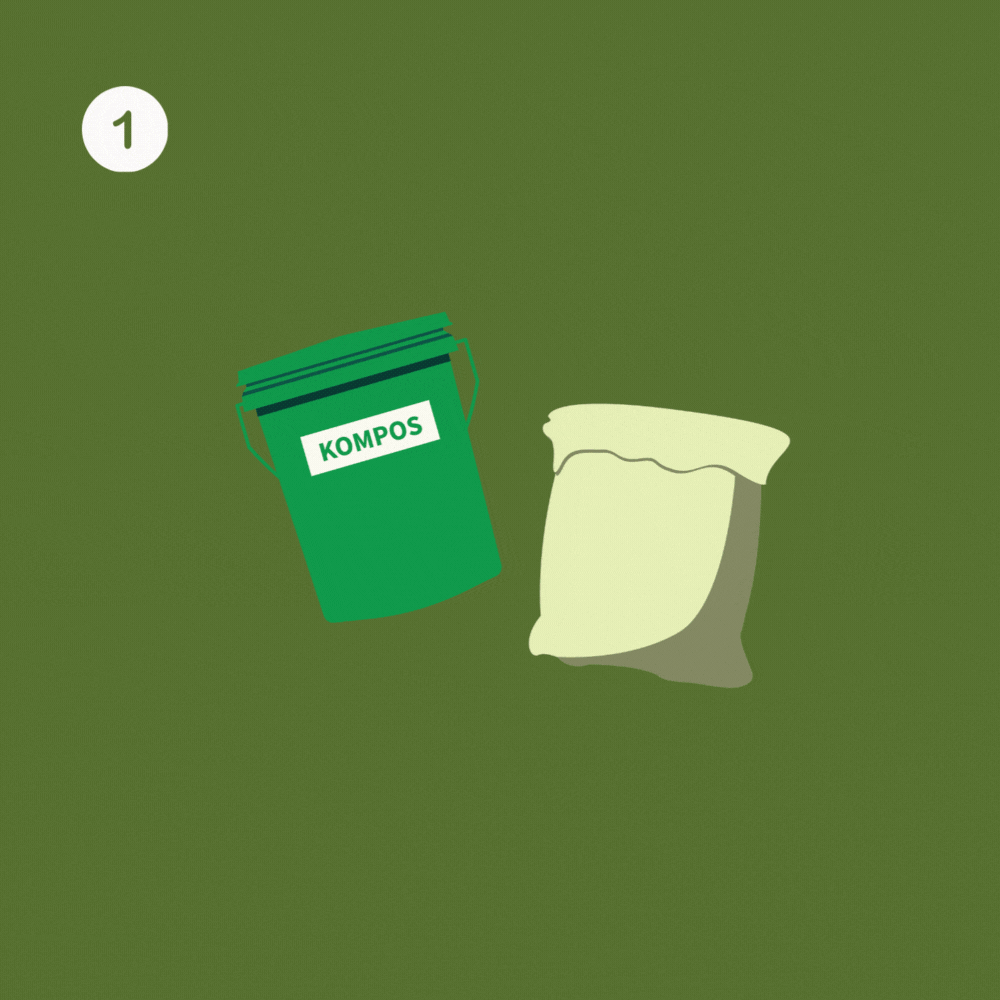
O1. Siapkan starter
Masukkan karung kedalam ember,
Masukkan unsur coklat (kurang lebih 10 cm),
Masukkan kompos (tanah)
Masukkan karung kedalam ember,
Masukkan unsur coklat (kurang lebih 10 cm),
Masukkan kompos (tanah)

O2. Pembuangan sampah organik
Masukkan sampah organik ke dalam ember,
lapisi bagian atasnya dengan tanah, kemudian tutup ember,
ulangi langkah ini sampai ember penuh
Masukkan sampah organik ke dalam ember,
lapisi bagian atasnya dengan tanah, kemudian tutup ember,
ulangi langkah ini sampai ember penuh
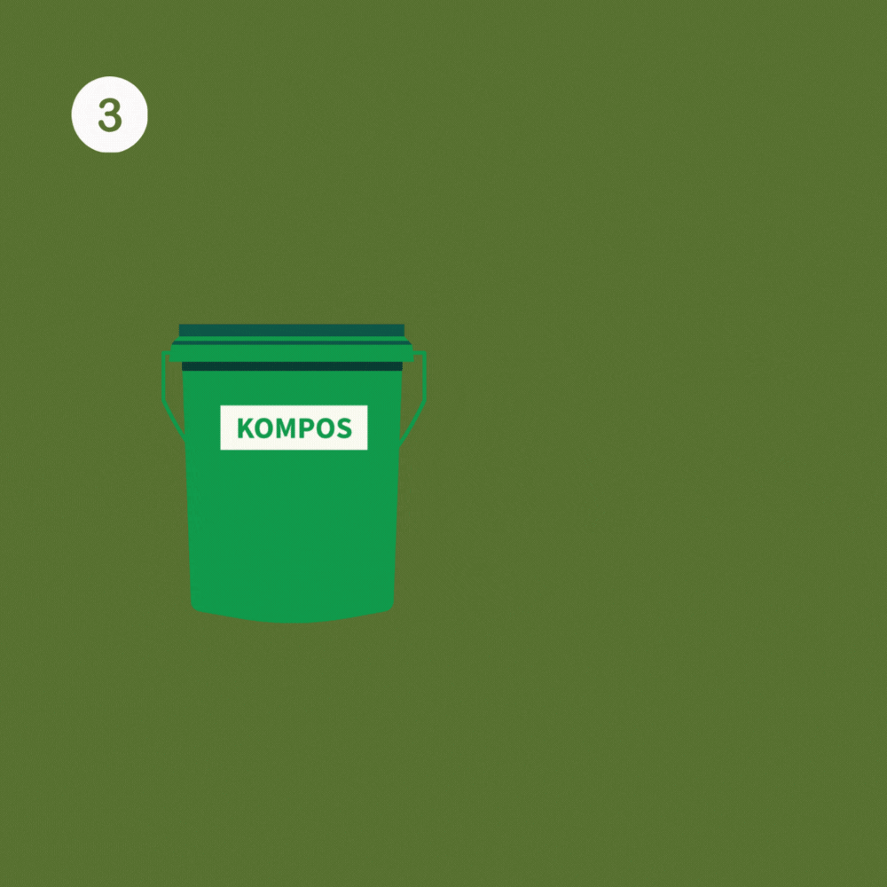
O3. Proses pengomposan
Keluarkan karung yang sudah penuh dari ember,
simpan ditempat aman (jangan terkena hujan).
Diamkan kurang lebih 1 bulan
Keluarkan karung yang sudah penuh dari ember,
simpan ditempat aman (jangan terkena hujan).
Diamkan kurang lebih 1 bulan
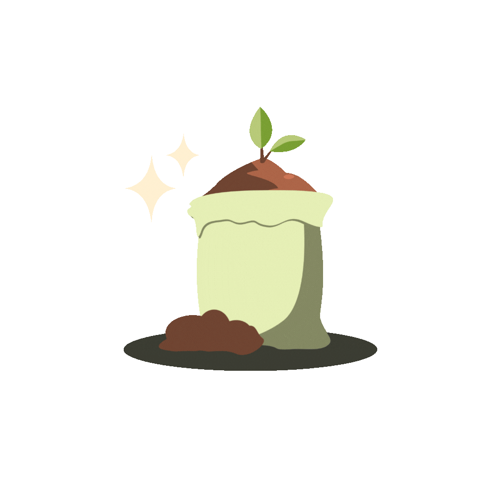
Panen Kompos
Hasil panen kompos dapat dimaanfaatkan sebagai; media tanam, pelapis sampah organik untuk proses pengomposan, dan aman jika kembalikan ke alam
Hasil panen kompos dapat dimaanfaatkan sebagai; media tanam, pelapis sampah organik untuk proses pengomposan, dan aman jika kembalikan ke alam